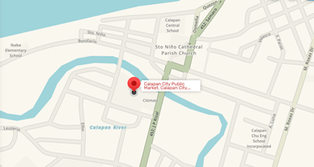

Environmental Concerns: Plastic Waste
Conventional plastic bags contribute to persistent pollution, harm wildlife, and degrade ecosystems due to their non-biodegradable nature.
From plastic waste to a stronger paper bag.
Conventional plastic bags contribute to persistent pollution, harm wildlife, and degrade ecosystems due to their non-biodegradable nature.
Paper bags offer a biodegradable and renewable option that can reduce reliance on plastic in daily packaging needs.
Ordinary paper bags often have low strength and are vulnerable to water exposure, limiting their reliability for carrying goods.
Recycled paper provides sustainability, cotton fiber adds reinforcement, and beeswax coating improves water resistance, together enhancing durability and eco-friendliness.
Few studies evaluate the combined effects on load-bearing capacity, water resistance, and degradability. This study addresses that gap through systematic testing.
Plastic is strong but never goes away. Ordinary paper goes away but gives out. EcoTote aims to do both.
This is the context of the study, where the need for sustainable packaging alternatives is observed and understood.

The prototype preparation and testing will be conducted in a separate location away from the research locale to ensure controlled conditions and consistent evaluation
See how the prototype was planned, made, and tested.